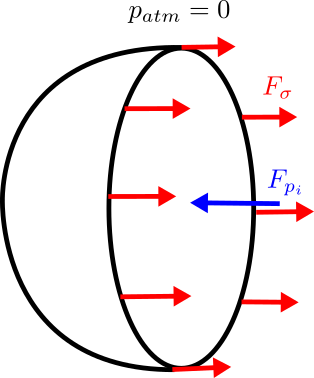

Laplace pressure jump for a spherical droplet
\( \displaystyle
\Delta p \;=\; p_i - p_{\text{atm}} \;=\; \frac{2\sigma}{R}
\)
Symbols
- \(\Delta p\) — gage pressure (Pa)
- \(p_i\) — pressure inside the droplet (Pa)
- \(p_{\text{atm}}\) — ambient atmospheric pressure (Pa, reference)
- \(\sigma\) — surface tension (N·m\(^{-1}\))
- \(R\) — droplet radius (m)

Choose a preset or pick Custom… to edit σ.
Plot range: 5–100 μm. Use the slider or drag the red dot.
Δp (Pa)
—
Δp (kPa)
—
Δp (psi)
—
Linear axes. Smaller \(R\) ⇒ larger \(\Delta p\). We treat atmospheric pressure as the reference (\(p_{\text{atm}}\)), so \(\Delta p\) is the gage pressure inside the droplet.
This demo uses \(\Delta p = p_i - p_{\text{atm}} = 2\sigma/R\) for a spherical, static interface (gravity and viscosity neglected).